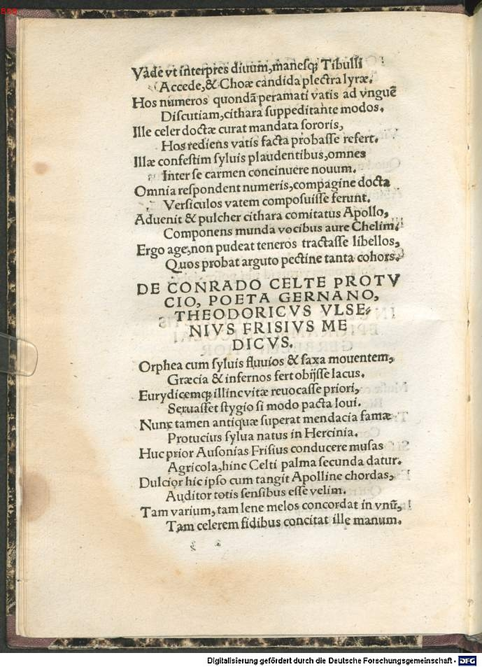
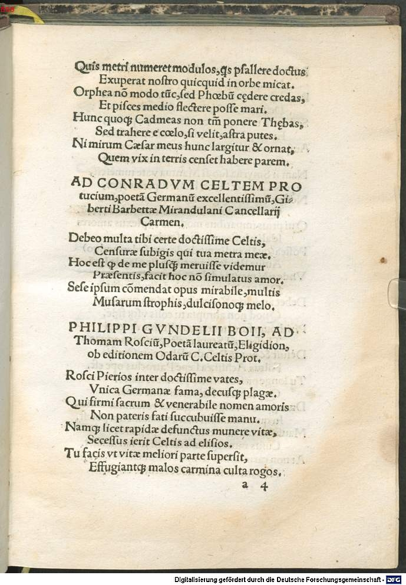

Celtis 5 (Dietrich Ulsen)
Faksimile


Transkription
De Conrado Celte Protucio, poeta Germano, Theodoricus Ulsenius Frisius medicus.
Ophea cum silvis fluvios et saxa moventem,
Graecia et infernos fert obiisse lacus.
Eurydicemque illinc vitae revocasse priori,
Servasset stygio si modo pacta Iovi.
Nunc tamen antiquae superat mendacia famae
Protucius silva natus in Hercynia.
Huc prior Ausonias Frisius conducere musas
Agricola, hinc Celti palma secunda datur.
Dulcior hic ipso cum tangit Apolline chordas,
Auditor totis sensibus esse velim.
Tam varium, tam lene melos concordat in unum,
Tam celerem fidibus concitat ille manum.
Quis metri numeret modulos, quos psallere doctus
Exuperat nostro quicquid in orbe micat.
Orphea non modo tunc, sed Phoebum cedere credas,
Et pisces medio flectere posse mari.
Hunc quoque Cadmeas non tantum ponere Thebas,
Sed trahere e caelo, si velit, astra putes.
Nimirum Caesar meus hunc largitur et ornat,
Quem vix in terris censet habere parem.
Übersetzung
Dietrich Ulsen, der friesische Arzt, über Konrad Celtis Protucius, den deutschen Dichter.
Griechenland erzählt, dass Orpheus, der mit den Wäldern auch die Flüsse und Felsen <mit seinem Lied> bewegen konnte, auch die Unterweltsflüsse besucht habe. Und Eurydike hätte er von dort zu ihrem früheren Leben zurückgerufen, wenn er nur die Abmachung mit dem stygischen Jupiter eingehalten hätte. Nun übertrifft Protucius, geboren im Herkynischen Wald, dennoch die Lügen des alten Ruhms. Der Friese Baumann <war> früher, die ausonischen Musen hierhin zu führen, von hier wird Celtis die zweite Siegespalme gewährt. Wenn dieser, süßer als Apoll selbst, die Saiten berührt, möchte ich mit all meinen Sinnen Zuhörer sein. Ein so vielfältiges, ein so leichtes Lied lässt er im Einklang harmonieren, eine so schnelle Hand bewegt er den Saiten. Wer könnte die Maße des Verses zählen, die er auf der Kithara zu spielen gelehrt <ist>, er übertrifft alles, was auf unserer Welt hervorstrahlt. Man könnte glauben, dass damals nicht nur Oprheus, sondern <auch> Phoebus <ihm> nachstünden und dass <er> Fische mitten im Meer rühren könne. Auch könnte man glauben, dass dieser nicht nur das kadmeische Theben errichten, sondern <sogar> die Sterne vom Himmel holen kann, wenn er es will. Zweifellos beschenkt mein Kaiser diesen reichlich und ehrt ihn, von dem kaum jemand meint, dass er auf der Erde einen Ebenbürtigen hat.
Metadaten
| Titel des Gedichts: | De Conrado Celte Protucio, poeta Germano, Theodoricus Ulsenius Frisius medicus. |
| Autor der Gedichts: | Dietrich Ulsen (Theodoricus Ulsenius) |
| Containerwerk: | Conradi Celtis Protucii, primi in Germania poetae coronati, libri Odarum quattuor, cum Epodo, et saeculari carmine diligenter et accurate impressi, et hoc primum typo in studiosorum emolumentum editi, Straßburg 1513 |
| Autor des Containerwerks: | Konrad Celtis (Conradus Celtis) |
| Gattung des Containerwerks: | Lyrik, Oden, Epoden, Carmen saeculare |
| Erscheinungsjahr: | 1513 |
| Verschlagwortung: | Poetologie, Apoll, Orpheus, Eurydike, Dichter, Wettstreit |